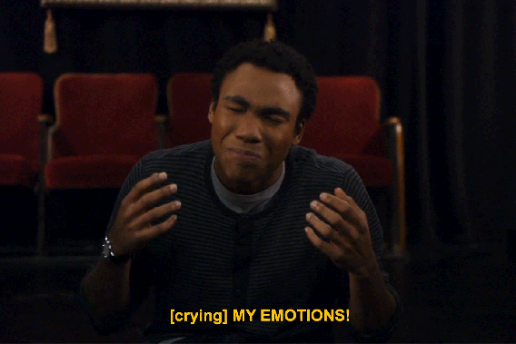
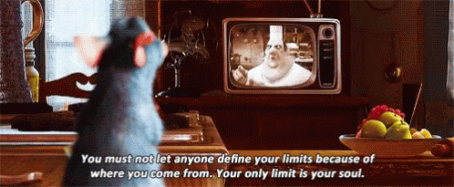
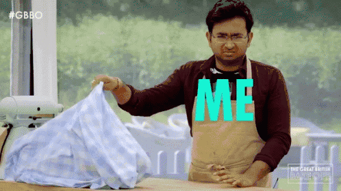

Watching TV shows and movies brings me comfort, and I thought that I would share some of my favorite ones to watch, in no particular order. Let's go!
The Office
The Office (U.S. version) is a television series that depicts the daily lifes of coworkers in an office and blah blah blah, if you haven't heard of The Office at this point you live under a rock and can't be saved.
It's funny, lighthearted, cringey and all the stuff in between that makes a great show great. Not to mention perfecting the Mocumentary style for other shows to imitate.
There are still some episodes I can't bring myself to watch (looking at you, Scotts Tot's), but even after Steve Carrell left the show it was really awesome. After watching the series a few times over it's one of those shows you can put on the backgorund while you live your life and try to be productive.

Ponyo
Ponyo is a Studio Ghibli film released in 2009 about a magical goldfish princess (stick with me on this one).
She's found in the ocean by a boy named Sosuke that picks her up and names her Ponyo. They form a loving friendship and she longs to be human so bad! She lives in the ocean with her weird sorerer dad that trys to keep her locked up in the ocean and she loves Sosuke so bad, she finds a way to turn human and leaves the ocean to be with him. In the process, some weird magic happens that causes some weird things to happen to Sosuke's village and they have to venture out and figure out what's going on.
There's more magic to it but basically, it's wholesome and cute and what more does anyone really need?
A fish loves a boy so much she turns into a human girl just to be with him. Just watch the movie and if you don't like it then keep it to yourself because you're wrong and don't have a heart.

Community
Community is another series that I personally think is really underrated and shouldn't be!
The premise is basically a bunch of adults going back to community college and forming a study group, the series follows this group and their friendship.
I love shows that break the 4th wall and don't take themselves seriously and I think this show walks the line perfectly between being original and playing on some of the funnier cliches that shows have to make it their own.
There was a running joke about the series getting '6 seasons and a movie' and although they never got a movie, it's worth binge watching all the seasons that did come of this.

Ratatouille
I want to preface by saying that I am absolutely terrified of rodents. Like, it's a completely irrational fear that I'm aware of that I know makes my life hard but it is just who I am.
However... I love watching Ratatouille. It's a movie about a rat that has a passion for cooking and after circumstances that separate him from his family, gets his chance to cook at a restaraunt. It's a cute movie with amazing music, animation, and story that anyone can be anything they want to be... even a rat.
Everyday I think about why I think this is such an adorable movie because i can't even look at hamsters without shuddering but again, the fear isn't logical.
If you're looking for french accents and cute puns (the main human character is named Linguine... that's adorable) then watch this movie ASAP.

Great British Baking Show
This may be a niche market but the rate at which I consume cooking shows is kind of frightening. American cooking shows are full of pressure, and sabotage and a lot of money and even more yelling. It definiely can be entertaining but sometimes it doesn't end up being about the food.
The GBBS is the definiion of wholesome good in this world. It's literally just watching bakers bake. it's a competition but no one is mean, no one is nasty and no one yells at one another.
They're so encouraging and and polite and I know it has to be because theyre not ruined by the expectations America has set on 'reality' shows. This is a the show I put on when I want to destress because there is nothing that I need to watch with a plot, drama, or conflict to reslove.
It's literally. just. baking.
